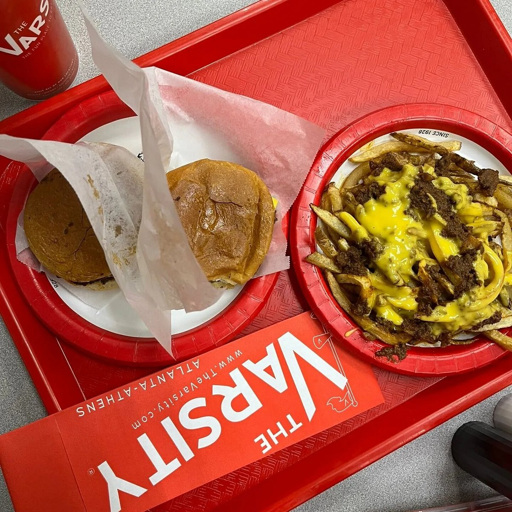

Since 1928
The Story
In 1928, Frank Gordy opened a small lot near the Georgia Institute of Technology selling hot dogs and root beer. What started as a curbside stand grew into a world-famous drive-in — a place where carhops, honking horns, and the smell of chili on the grill became part of Atlanta's identity.
Nearly a century later, The Varsity is still family owned and operated, still slinging the same fast, fresh Southern classics, and still greeting every guest with the same question that's become an Atlanta catchphrase.
“What'll ya have?”

Milestones
Frank Gordy opens a small lot near Georgia Tech selling hot dogs and root beer.
Curb-service carhops and a growing menu turn the stand into a beloved drive-in.
The Varsity grows into what's billed as the world's largest drive-in restaurant.
Generations of Georgia Tech fans and Atlantans make it a pre- and post-game tradition.
Still family owned, still serving the classics — an Atlanta landmark since 1928.